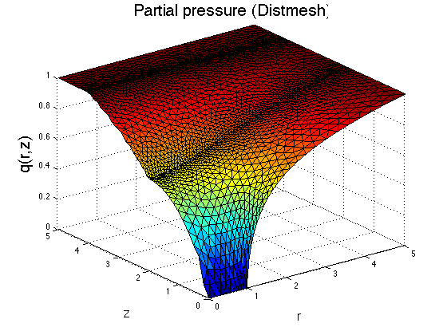

This program solves for the partial pressure using distmesh2d meshes.
to provide denser number of points near the singular points. Wakil Sarfaraz 08/08/2014.
tic addpath distmesh xmax = 5; ze = 2 ; zm = 4; zs = xmax; %sample_nodes(cx,cy,ze,zm,xmax,density) [p t] = sample_nodes(1,0,ze,zm,xmax,0.1); simplot(p,t) title('Mesh Plot') epsilon1 = 0.9214; epsilon2 = 0.9214; x = p(:,1); y = p(:,2); NNODES = length(x); NTRI = size(t,1); LNODES = t; SP = sparse(NNODES, NNODES); %This creates a sparse matrix of the size 'Number of nodes by Number of nodes'(entries usually computed by integration). LV = zeros(NNODES,1); % This creates the load vector of zero entries for now which is l(v) part of the weak formulation. for n = 1: NTRI % trimesh(t(1:3,:),p(:,1),p(:,2)); % scatter(x(LNODES(n,:)),y(LNODES(n,:))); % axis equal % pause r1 = [x(LNODES(n,1)) y(LNODES(n,1))];% Position vector (x,y)' for the first nodes of all triangles. r2 = [x(LNODES(n,2)) y(LNODES(n,2))];% Position vector (x,y)' for the second nodes of all triangles. r3 = [x(LNODES(n,3)) y(LNODES(n,3))];% Position vector (x,y)' for the third nodes of all triangles. J = [r2(1)-r1(1) r2(2)-r1(2); r3(1)-r1(1) r3(2)-r1(2)]; %This is the jacobian matrix of the mapping. Astiff = ((r2(1)+r3(1))/(2*det(J)))*... [(r2(2)-r3(2))^2+(r3(1)-r2(1))^2 ... (r2(2)-r3(2))*(r3(2)-r1(2))+(r3(1)-r2(1))*(r1(1)-r3(1))... (r2(2)-r3(2))*(r1(2)-r2(2))+(r3(1)-r2(1))*(r2(1)-r1(1)); ... (r3(2)-r1(2))*(r2(2)-r3(2))+(r1(1)-r3(1))*(r3(1)-r2(1)) ... (r3(2)-r1(2))^2+(r1(1)-r3(1))^2 ... (r3(2)-r1(2))*(r1(2)-r2(2))+(r1(1)-r3(1))*(r2(1)-r1(1)); ... (r2(2)-r3(2))*(r1(2)-r2(2))+(r3(1)-r2(1))*(r2(1)-r1(1)) ... (r3(2)-r1(2))*(r1(2)-r2(2))+(r1(1)-r3(1))*(r2(1)-r1(1)) ... (r1(2)-r2(2))^2+(r2(1)-r1(1))^2]; yave = (r1(2)+r2(2)+r3(2))/3 ; if yave <= ze Astiff = (1+epsilon1)/(1-epsilon1) *Astiff; elseif yave >= zm Astiff = (1+epsilon2)/(1-epsilon2) *Astiff; end for i = 1 : 3 for j = 1:3 % Since SP was created a zero matrix originally, Now for all three vertices of all triangles we put the SP(LNODES(n,i),LNODES(n,j)) =SP(LNODES(n,i),LNODES(n,j))+ Astiff(i,j); %The values of Astiff in the SP. end end end eps = 1e-6; for i = 1: NNODES if (abs(x(i) - xmax) < eps ) % Boundary condition for the first layer. LV(i) = 1; SP(i,:) = 0; SP(i,i) =1 ; elseif ( abs(y(i)-0) < eps && x(i) >= 0 && x(i) <= 1) % boundary condition for the second layer. SP(i,:) = 0; SP(i,i) = 1; LV(i) = 0; elseif ( abs(y(i) - zs) < eps) LV(i) = 1; SP(i,:) = 0; SP(i,i) =1 ; end end U = SP\LV; %Solves the linear system. trisurf(LNODES,x,y,U) %shading interp xlabel('r','fontsize',16) xlim([0 xmax]) ylim([0 xmax]) zlim([0 1]) ylabel('z','fontsize',16) zlabel('q(r,z)','fontsize',20) title('Partial pressure (Distmesh)','fontsize',20) %shading interp % Now we compute the current using the Finite element triangles. Dh = zeros(NTRI,1); Ih = 0; for i = 1: NTRI Dh(i) = ([x(LNODES(i,1))-x(LNODES(i,3)) y(LNODES(i,1))-y(LNODES(i,3))]*... [x(LNODES(i,1))-x(LNODES(i,3)) y(LNODES(i,1))-y(LNODES(i,3))]'... *(U(LNODES(i,2))-U(LNODES(i,1)))*(U(LNODES(i,1))-U(LNODES(i,2)))... +[x(LNODES(i,1))-x(LNODES(i,2)) y(LNODES(i,1))-y(LNODES(i,2))]*... [x(LNODES(i,1))-x(LNODES(i,2)) y(LNODES(i,1))-y(LNODES(i,2))]'... *(U(LNODES(i,3))-U(LNODES(i,1)))*(U(LNODES(i,1))-U(LNODES(i,3)))... +[x(LNODES(i,2))-x(LNODES(i,1)) y(LNODES(i,2))-y(LNODES(i,1))]*... [x(LNODES(i,1))-x(LNODES(i,3)) y(LNODES(i,1))-y(LNODES(i,3))]'... *((U(LNODES(i,3))-U(LNODES(i,1)))*(U(LNODES(i,1))-U(LNODES(i,2)))... +(U(LNODES(i,2))-U(LNODES(i,1)))*(U(LNODES(i,1))-U(LNODES(i,3)))))... *(1/6)*(x(LNODES(i,1))+x(LNODES(i,2))+x(LNODES(i,3))); yave = (y(LNODES(i,1))+ y(LNODES(i,2))+y(LNODES(i,3)))/3; if (yave >=ze && yave <=zm ) Dh(i) = (1-epsilon1)/(1+epsilon1) * Dh(i); elseif yave >=zm Dh(i) = (1+epsilon2)*(1-epsilon1)/(1-epsilon2)/(1+epsilon1) *Dh(i); end r1 = [x(LNODES(i,1)) y(LNODES(i,1))];% Position vector (x,y)' for the first nodes of all triangles. r2 = [x(LNODES(i,2)) y(LNODES(i,2))];% Position vector (x,y)' for the second nodes of all triangles. r3 = [x(LNODES(i,3)) y(LNODES(i,3))];% Position vector (x,y)' for the third nodes of all triangles. J = [r2(1)-r1(1) r2(2)-r1(2); r3(1)-r1(1) r3(2)-r1(2)]; Ih = Ih+(Dh(i)/det(J)); end Ih = -(pi/2)*Ih; size(p); size(t); toc
Elapsed time is 40.178594 seconds.